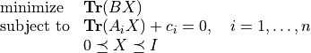
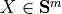
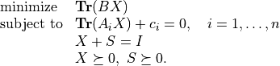
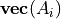
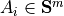
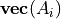
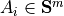

SDPs with upper bounds¶
Consider a standard form SDP with an added upper bound
(1)¶
with variable . The problem (1) can be reformulated by introducing a slack variable 
(2)¶
Documentation
A custom solver for SDPs with upper bounds is available as a Python
module ubsdp.py. The module implements the following function:
 are
 where  is
the i’th data matrix.
are
 where  is
the i’th data matrix. .
.Example
from cvxopt import matrix, normal, spdiag, misc, lapack
from ubsdp import ubsdp
m, n = 50, 50
A = normal(m**2, n)
# Z0 random positive definite with maximum e.v. less than 1.0.
Z0 = normal(m,m)
Z0 = Z0 * Z0.T
w = matrix(0.0, (m,1))
a = +Z0
lapack.syev(a, w, jobz = 'V')
wmax = max(w)
if wmax > 0.9: w = (0.9/wmax) * w
Z0 = a * spdiag(w) * a.T
# c = -A'(Z0)
c = matrix(0.0, (n,1))
misc.sgemv(A, Z0, c, dims = {'l': 0, 'q': [], 's': [m]}, trans = 'T', alpha = -1.0)
# Z1 = I - Z0
Z1 = -Z0
Z1[::m+1] += 1.0
x0 = normal(n,1)
X0 = normal(m,m)
X0 = X0*X0.T
S0 = normal(m,m)
S0 = S0*S0.T
# B = A(x0) - X0 + S0
B = matrix(A*x0 - X0[:] + S0[:], (m,m))
X = ubsdp(c, A, B)